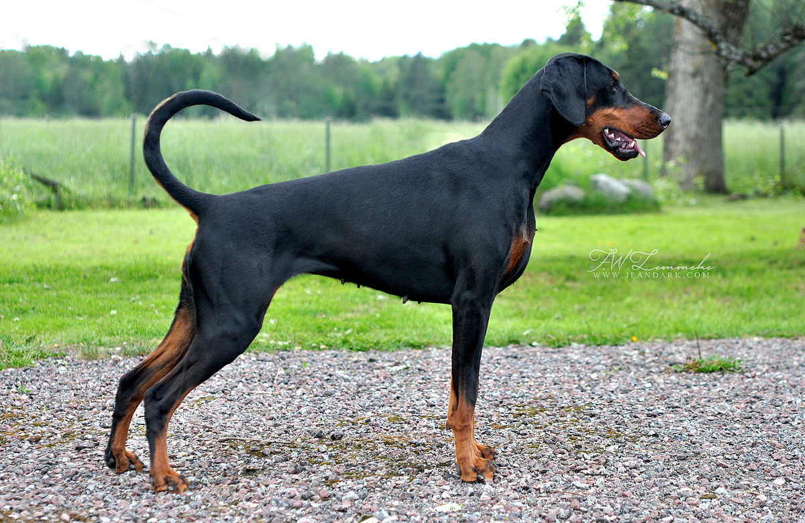

Här hittar du viktiga info om hundrasen Dobermann
Dobermanns rasnamn anknyter till dess första kända uppfödare: Friedrich Louis Dobermann (1834-1894) i Apolda i Thüringen. Förutom som uppfödare var han verksam som skatteindrivare och stadens hundfångare. För sin egen uppfödning valde han ut särskilt skarpa hundar. De så kallade "slaktarhundarna" utgjorde troligen den främsta grunden för dobermannrasen. Dessa var föregångare till den nutida rottweilern, uppblandade med en från Thüringen kommande schäfervariant, som var svart med roströda tecken. Ur denna blandning framavlade han på 1870-talet dobermann, som vid denna tid erhöll sina bruksegenskaper, både som vakt- och gårdshund. Senare korsades pinscher, manchesterterrier och greyhound in.
1899 erkändes rasen av den tyska kennelklubben. 1912 bildades rasklubben. Redan i början av 1900-talet blev dobermann officiellt erkänd som tjänstehund hos den tyska polisen.
Rasen dobermann kom till Sverige 1911, då kallades den för "släthårig tysk råtthund". Ganska fort ändrades namnet till dobermannpinscher, men idag anser man inte att dobermann och pinscher hör ihop så rasen kallas idag bara dobermann.
Rasen har en väldigt hög aktivitetsnivå och kräver en aktiv och handfast förare. Dobermann är arbetsvilliga hundar som är goda familjehundar, vakthundar, brukshundar och lydnadstävlingshundar. De är lättlärda individer som tycker om mental sysselsättning. Den är lämplig som skyddshund. Vid val av uppfödare rekommenderas god undersökning av hur valpens 8 första veckor varit. En av de viktigaste egenskaperna för en fungerande hund är att den har en positiv syn på människor och tidiga erfarenheter av hantering.

För att få högre utmärkelser på hundutställning måste en dobermann ha meriter från bruksprov, tjänstehundscertifikat eller vara godkänd draghund.
I avelsarbetet eftersträvas en medelstor, kraftig och muskulöst byggd hund, som trots den substansfulla kroppen uppvisar elegans och ädelhet. I Sverige är svanskupering förbjuden, och det är nu olagligt i många länder. I Sverige är öronkupering förbjuden men det är vanligt att öronen kuperas i många andra länder. Godkända färger är brun med tan och svart med tan.

Lever 8–12 år. Som längst har en dobermann levt 16 år. Dobermannen tillhör de sjukaste hundraserna i Sverige.
Denna sida har använt sig av Wikipedia